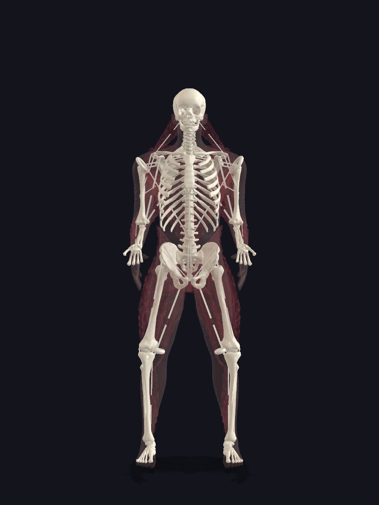
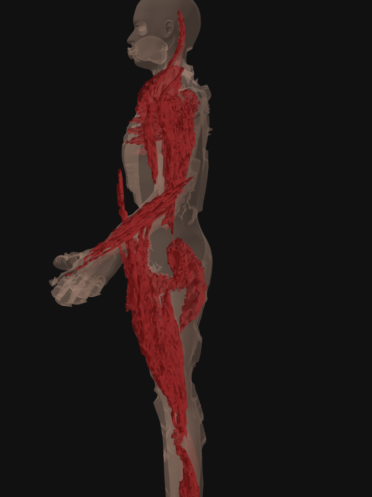
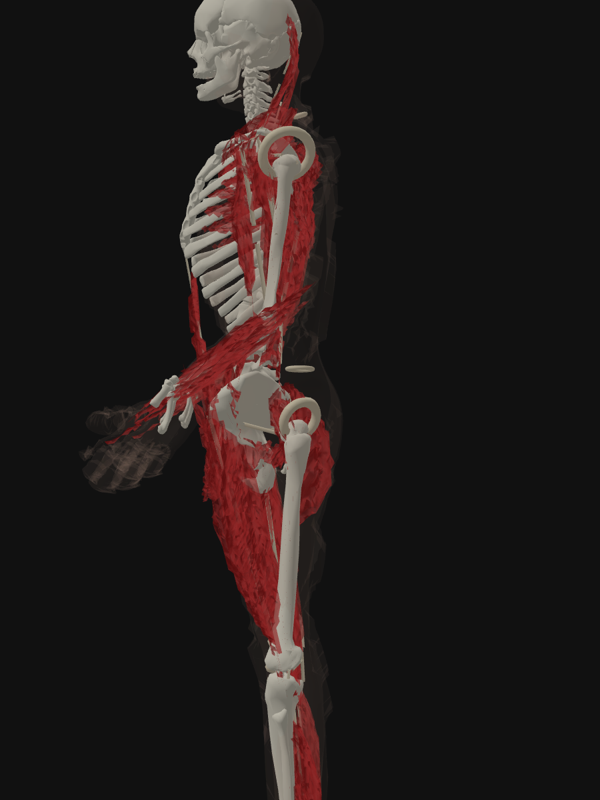

can a vision LLM verdict a 3D anatomical model?
context
Corpus is a 3D anatomical app that renders the human body in layers — skeleton, connective tissue, muscle, fat, skin — each derived from the layer beneath it. Engineering is done by a fleet of coding agents working in parallel; a human reviews the output before it ships.
The recurring failure mode looked like this:
- A batch of agents finishes a build. The automated suite — 1,000+ numeric checks asking does the mesh exist, are the bounding boxes legal, did the renders write to disk — reports PASS on everything.
- The renders open. The model is visibly broken: white rings at the shoulders that shouldn’t be there, muscle protruding past skin, skin failing to cover the head and hands.
- None of these were caught by the numeric suite. The meshes existed. The materials had been assigned. Numerically, the build was clean.
That left a single human as the visual quality gate on every commit. The experiment asks whether a vision-capable LLM can plausibly replace that gate.
the three test defects
Three actual defective renders from a recent build. Each is a single PNG, roughly 600–1200 px per side, generated by puppeteer against the production three.js scene.
T1 — joint-capsule tori inheriting the wrong material
Bright white rings at each shoulder. Procedural joint capsules at the glenohumeral joint were assigned the bone material instead of the connective-tissue material.

T2 — muscle protruding past the skin envelope
The kd-tree skin-derivation step fails to push skin outward enough; muscle is visible at the face, anterior chest, abdomen, and limbs.

T3 — skin failing to cover the body
Hands and head fully exposed; the skin shell renders as a transparent ghost rather than a continuous envelope.

round 1 — 3 models, 1 prompt level, 27 trials
setup
- Models tested: Claude Opus 4.7, Sonnet 4.6, Haiku 4.5.
- Prompt level: moderate. The prompt primes the model with what the image is supposed to depict and asks for anomalies in a closed-form template.
- Trials: 3 independent sub-agents per (model × test) cell, same prompt verbatim.
- Total: 3 models × 3 tests × 3 trials = 27 trials.
the moderate prompt (T1 example)
Read <image_path> with the Read tool.
It is a render intended to show a human skeleton (white bones) with the
soft tissue layer rendered as translucent dark red behind it for cutaway
context.
Question: List anything visible that you would NOT expect to see in a
clean skeleton-plus-cutaway view. For each item:
- LOCATION (specific body region)
- DESCRIPTION (≤15 words)
If nothing is anomalous, write: NO DEFECTS DETECTED.
Answer in under 120 words. No tools other than Read.results
| model | T1 tori | T2 muscle | T3 skin | overall |
|---|---|---|---|---|
| Opus 4.7 | 0% | 100% | 100% | 67% |
| Sonnet 4.6 | 50% | 50% | 100% | 67% |
| Haiku 4.5 | 0% | 50% | 50% | 33% |
round 1 read
- Haiku was too weak for verdict-style work on these three tests — generic answers, anatomical errors (“biceps in the forearm”), no consistent signal. It was dropped from round 2.
- Opus and Sonnet tied at 67%, but their misses didn’t overlap: Opus missed T1 entirely; Sonnet missed half of T2, flipping the direction of the protrusion in every trial.
- With one prompt level and three trials per cell, most of what was measured was sampling noise.
The open question after round 1: does prompt phrasing matter, or is 67% the model ceiling?
round 2 — 2 models, 3 prompt levels, 54 trials
setup
- Models: Opus 4.7, Sonnet 4.6.
- Prompt levels: minimal (“list visible defects”), moderate (same as round 1), extensive (~150 words of pipeline + material context).
- Trials: 3 per cell, same prompt verbatim.
- Total: 2 models × 3 prompts × 3 tests × 3 trials = 54 trials. The moderate cells were reused from round 1; 36 new trials were run.
scoring rubric
| score | criterion |
|---|---|
| 1.00 | Named the primary defect with correct geometry and noun. |
| 0.75 | Named the defect class with mostly-correct description. |
| 0.50 | Identified the class but with imprecise geometry (e.g., “lines” for “tori”). |
| 0.25 | Flagged a related or symptomatic issue. |
| 0.00 | Missed entirely. |
Partial credit reflects that defect detection is not strictly binary — a model that says “white lines at the shoulders” has caught the bug class even if it didn’t name the geometry correctly.
overall
| model | T1 | T2 | T3 | overall |
|---|---|---|---|---|
| Opus 4.7 | 22% | 100% | 88% | 70% |
| Sonnet 4.6 | 59% | 58% | 100% | 72% |
per-cell breakdown (points out of 3 per cell)
| cell | T1 min | T1 mod | T1 ext | T2 min | T2 mod | T2 ext | T3 min | T3 mod | T3 ext |
|---|---|---|---|---|---|---|---|---|---|
| Opus | 0.50 | 0.00 | 1.50 | 3.00 | 3.00 | 3.00 | 1.95 | 3.00 | 3.00 |
| Sonnet | 1.50 | 1.50 | 2.35 | 1.60 | 1.50 | 2.10 | 3.00 | 3.00 | 3.00 |
effect of prompt context (overall %, both models)
Opus 4.7
Minimal ████████████░░░░░░░░ 61%
Moderate █████████████░░░░░░░ 67%
Extensive █████████████████░░░ 83%
Sonnet 4.6
Minimal █████████████░░░░░░░ 68%
Moderate █████████████░░░░░░░ 67%
Extensive █████████████████░░░ 83%Both models converged at 83% with extensive context. At any given context level, the difference between them was less about overall rate and more about which defects they caught.
sample outputs
Sonnet on T3 with MINIMAL prompt (trial 2, verbatim):
SHOULDER RINGS: Two large circular ring artifacts floating at shoulder/axilla, anatomically incorrect. PELVIS/HIP: Muscle mass is sparse and thin; hip region lacks volume.
3 of 3 minimal-context trials on this image named the ring artifact correctly.
Sonnet on T3 with EXTENSIVE prompt (trial 1, verbatim):
Head/Neck — Skull fully exposed; no skin coverage from crown through neck. Shoulder/Upper arm — Humerus bone protrudes visibly; skin absent on lateral shoulder. Rib cage — Entire ribcage exposed through torso.
The same model, primed to look for skin-coverage failures, produced a thorough coverage report but did not mention the rings in any of 3 extensive-context trials. Priming attention narrowed it.
Opus on T2 with EXTENSIVE prompt (trial 1, verbatim):
Face/jaw (front): Red muscle bleeds through cheek and jawline, breaking skin envelope. Neck (anterior): Large muscle mass protrudes forward past skin contour. Root cause: kd-tree outward-pull insufficient on ventral surface; skin tracks dorsal silhouette only.
Opus correctly identified anterior protrusion in all 3 trials and proposed a root-cause hypothesis. Sonnet on the same image misread the protrusion as posterior in all 3 of its trials — the same directional error every time.
what changed from round 1 to round 2
| question | round 1 | round 2 |
|---|---|---|
| Viable for this task? | Maybe — ~67%. | Up to 83% with extensive context. |
| Which model is best? | Tied at moderate context. | Still tied at extensive context — but different misses. |
| Does Haiku work? | No, 33% with anatomical errors. | Dropped. |
| Does prompt phrasing matter? | Not tested. | Yes — with a trap (see below). |
| Upper bound? | Unknown. | 83% per single shot on these three defects. |
| Camera angle? | Not tested. | Changed scores by more than prompt level on at least T1. |
observations
1. The two models caught different defects
On this dataset, Opus dominated spatial reasoning — which direction the protrusion runs, which side of the body is leaking. 100% vs 58% on T2. Sonnet dominated geometric detail — naming the torus artifact by its actual noun. 59% vs 22% on T1. Either model alone left defects on the table.
Caveat: three defects is not enough to argue this generalizes. It does suggest that running both models on a render and unioning the outputs is worth piloting.
2. Context helps — until it suppresses
Extensive context produced the highest-scoring cells on average. It also visibly narrowed attention: Sonnet primed to look for skin coverage stopped naming the unrelated ring artifacts that minimal-context Sonnet had caught in 3 of 3 trials. A prompt that scopes the model toward expected defects appears to reduce its catch rate on unexpected ones.
3. Camera angle matters more than expected
A torus projects edge-on from the front (looks like a line) and face-on from the side (looks like a ring). On T1, the same model often described both correctly — but only the side view let it recognize the geometry as a ring. On this defect, switching the camera angle produced a larger score delta than switching the prompt level. Whether that generalizes to other defect classes is open.
4. Variance within a cell
- Opus: low intra-cell variance. Three trials at the same cell produced essentially the same defect list. A single trial appeared reliable.
- Sonnet: medium variance. Consistent on systematic errors (when wrong, wrong the same way every trial); some lexical variation in detail naming.
Implication for budget: at least in this experiment, repeated trials of the same prompt mostly reproduced the same answer. Varying prompt or model was more informative than varying the seed.
caveats
This is a small, in-house experiment, not a benchmark. Worth flagging explicitly:
- n is small. 81 trials, 3 defect images, 3 trials per cell. Conclusions about which model is better at what are directional, not statistical.
- Defects are not representative. Three specific failures from one app. A different defect taxonomy could change the relative model ranking entirely.
- Scoring is human-judged. The 1.0 / 0.75 / 0.5 rubric is reasonable but not blind — the same person who designed the test scored it.
- Same prompts across cells. Better prompts would shift the numbers. The headline rates are floors, not ceilings.
- No false-positive measurement. The tests use known-defective renders only. A real quality gate also has to not cry wolf on clean ones; that wasn’t measured here.
proposed setup
Based on what was observed — not yet validated at scale — the next iteration to pilot looks like:
- Sonnet at minimal prompt as a wide net for unexpected anomalies.
- Opus at extensive prompt for the spatial verdict on the expected failure modes.
- Defects flagged by ≥2 shots are treated as high-confidence; everything else routes to human review.
- Renders are isolated per layer (one mesh group at a time, black background) and shot from multiple camera angles per artifact.
The bet is that this shrinks the human-review surface from “every render” to “audit the high-confidence flags and spot-check the rest.” Whether it actually lowers false negatives below the tolerance of a shippable product is the next thing to measure.